第 4 章 ① 光的特性10 題
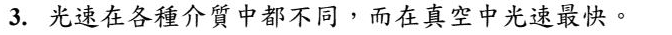
光在不同介質裡跑的速率不一樣，真空中最快（約 3 × 10⁸ m/s）。空氣中只慢一點點，水、玻璃就慢得多。
對照聲音：聲音剛好相反——在真空中根本傳不過去。
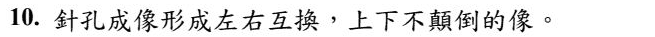
錯。針孔成像是上下、左右都顛倒——因為光走直線。
想一次就懂：物體上方發出的光，要穿過小孔只能斜斜往下走，所以落在屏幕的下方。左右也是同樣的道理。
這種「轉 180 度」的像，和照鏡子那種「只有左右相反」是完全不同的兩件事。
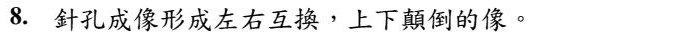
針孔成像是上下、左右都顛倒（整個轉了半圈），因為光走直線、從小孔交叉過去。
這句「左右互換、上下顛倒」正好是正確的描述。
和 113 學年度是非題第 10 題對照：那一題說「上下不顛倒」→ 否。字只差一個，答案相反。
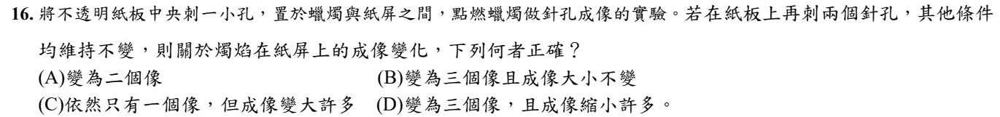
每一個針孔都會各自成一個像——三個孔就有三個像。
像的大小只跟「蠟燭到孔」和「孔到紙屏」的距離有關，多刺兩個孔，距離沒變 → 大小不變。
(A) 三個孔不會只有兩個像。(C) 孔多不會合成一個大像。(D) 距離沒變，像不會縮小。
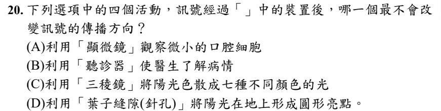
葉子縫隙在地上形成的圓形亮點，就是針孔成像（那是太陽的像）。光在空氣中直線前進，穿過小縫沒有轉彎 → 方向沒變。
(A) 顯微鏡靠透鏡折射。(B) 聽診器靠管子把聲音一路反射導進耳朵。(C) 三稜鏡讓光折射、分成七色。三個都改變了方向。
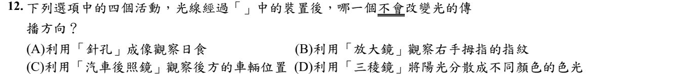
和上一題同一招：針孔成像 ＝ 光直進，光的方向沒有改變。
(B) 放大鏡是凸透鏡 → 折射。(C) 汽車後照鏡是凸面鏡 → 反射。(D) 三稜鏡 → 折射＋色散。
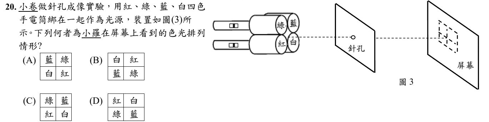
針孔成像上下、左右都顛倒，等於把原本的排列轉半圈（180°）。
照圖中的樣子，手電筒是上排「綠、藍」，下排「紅、白」。轉半圈：
上排變成「白、紅」，下排變成「藍、綠」→ (B)。
(A) 只有左右對調。(C) 完全沒變。(D) 只有上下對調。
技巧：把題目的圖倒過來看（手機轉半圈），看到的就是針孔的像。
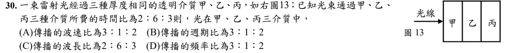
三塊厚度一樣，花的時間愈長，速率愈慢——速率和時間成反比。
時間 2：6：3 → 速率 ＝ 1/2：1/6：1/3，全部乘以 6 → 3：1：2 → (A)。
(B)(D) 光的頻率由光源決定，換介質不會變 → 頻率、週期都是 1：1：1。
(C) 波長 ＝ 速率 ÷ 頻率，頻率不變 → 波長比和速率比一樣，是 3：1：2，不是 2：6：3。
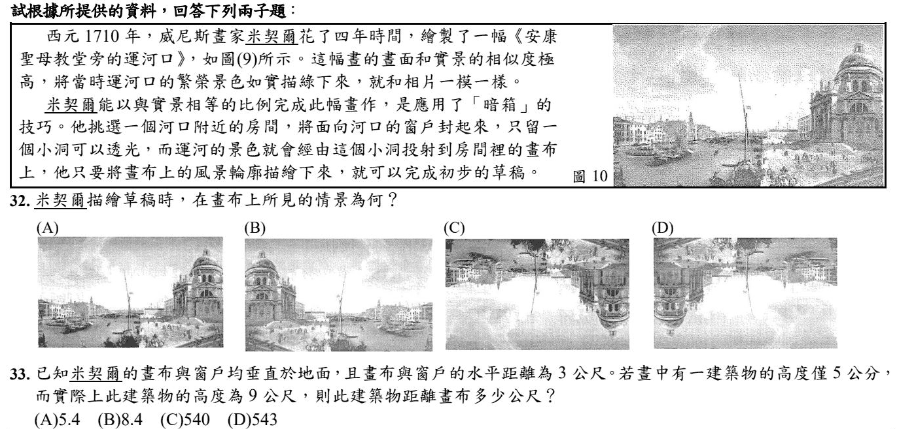
「暗箱」就是一間很大的針孔成像：小洞是針孔，畫布是紙屏。課本的結論是：針孔成像上下、左右都顛倒（整張畫轉半圈）→ (D)。
(A) 和原畫一樣，沒顛倒。(B) 只有左右相反（像照鏡子）。(C) 只有上下顛倒。
⚠️ 補充：(C) 和 (D) 的差別在「從哪一邊看畫布」。照課本「上下左右都顛倒」的說法是 (D)；但如果嚴格站在畫家的位置（背對小洞、面對畫布）看，左右其實沒有對調，會是 (C)。這一卷沒有官方解答，這裡依課本說法選 (D)，請問老師這一題怎麼算。
針孔成像可以用相似三角形：像高 ÷ 物高 ＝ 像距 ÷ 物距。
像高 5 公分 ＝ 0.05 公尺，物高 9 公尺，像距（小洞到畫布）3 公尺：
0.05 ÷ 9 ＝ 3 ÷ 物距 → 物距 ＝ 3 × 9 ÷ 0.05 ＝ 540 公尺（建築物到小洞）。
題目問的是到畫布的距離，還要再加上小洞到畫布的 3 公尺 → 540 ＋ 3 ＝ 543 公尺。
陷阱：(C) 540 是算到小洞就停了。看清楚題目問「距離誰」。
第 4 章 ② 光的反射定律4 題
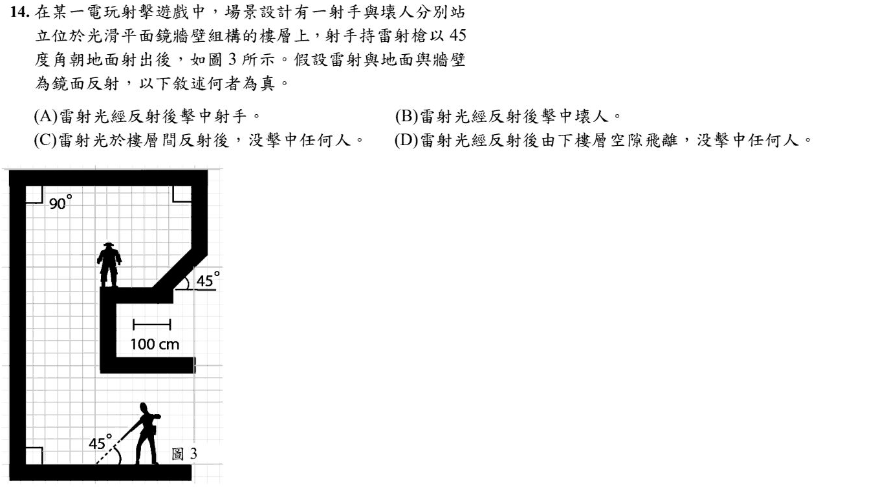
反射定律：入射角 ＝ 反射角。雷射以 45° 打下去，每次碰到地板或牆，都是 45° 進、45° 出。
跟著方格線畫：雷射打到地板 → 往左上彈到左邊的牆 → 再往右上彈。地板和牆互相垂直，光碰了這兩面之後會「掉頭」，沿著和原來平行、方向相反的路線射回去 → 打中射手自己。
這類題目一定要拿筆在格子上畫，每一段都斜走 45°（橫一格、直一格），不要用猜的。
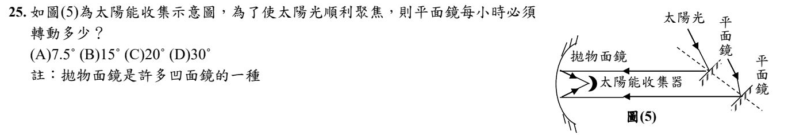
太陽每小時在天空中移動 15°（一天 24 小時繞 360°，360 ÷ 24 ＝ 15）。
關鍵：鏡子轉 1°，反射光會轉 2°（入射角和反射角同時各變 1°）。陽光每小時偏 15°，要讓反射光一直射向收集器，鏡子只要轉一半 → 7.5°。
(B) 15° 是太陽移動的角度，不是鏡子要轉的角度。
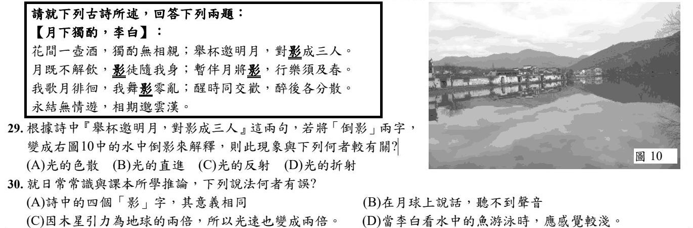
水面在這裡就是一面鏡子——光從月亮射到水面、彈回來進入眼睛，所以是反射。
那什麼時候是折射？當你看的是水裡面的東西（魚、石頭、伸進水裡的筷子）——光從水裡穿出來，方向轉了彎。
一句話分清楚：看水面上的倒影＝反射；看水面下的東西＝折射。
(C) 是這一題要抓的：光速不會因為重力大就變快。真空中的光速是一個常數（約每秒 30 萬公里），它是宇宙的上限，不是可以被拉快的東西。
(B) 月球沒有大氣，聲音沒有介質可以傳，正確。
(D) 水中的魚因為折射，看起來比實際位置淺，正確——所以叉魚要往看到的位置下方叉。
🔴 說句公道話：(A) 嚴格看也站不住腳（詩中的「影」有月影、身影、倒影，意義並不完全相同）。學校公布的答案是 (C)，而 (C) 的物理錯誤最明確，所以在考場上仍應選 (C)——但你能看出 (A) 也怪怪的，代表你讀得比題目還仔細。
第 4 章 ③ 平面鏡的成像性質6 題
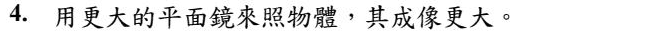
平面鏡的像和物體一樣大，跟鏡子大小無關。
鏡子大，只是能看到的範圍比較大（看得到全身），像本身沒有變大。
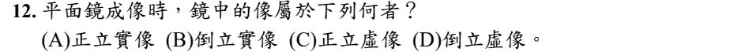
你在鏡子裡是正立的（頭在上），這不用想。
關鍵是虛像：把一張紙放到鏡子後面，接不到任何影像——那個「你」不在鏡子後面，是你的大腦把反射光線往回延長畫出來的。
再複習一次那條捷徑：實像必倒立、虛像必正立。既然是虛像，就只可能是「正立虛像」，(B)(D) 直接刪掉。
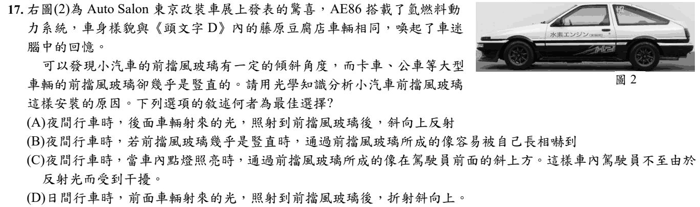
擋風玻璃除了讓光透過，也會像平面鏡一樣反射一部分的光。晚上車內開燈，玻璃上就會出現車內東西的虛像。
玻璃斜斜的，這個像就跑到駕駛前方的斜上方，不擋住前面的路；如果玻璃是豎直的，像就剛好落在駕駛眼前，干擾開車 → (C)。
(A) 後車的光主要照到後照鏡、後擋風玻璃。(B) 重點不是「嚇到」，而是擋視線。(D) 討論的是反射，不是折射。
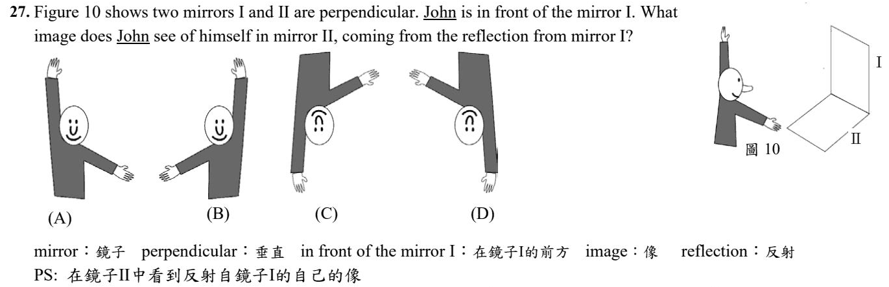
分兩步：先在鏡 I 成像，再把這個像拿到鏡 II 裡照一次。
① 鏡 I 是直立的牆鏡：John 看到的是一般照鏡子的像——正立，就像選項 (A) 那樣。
② 鏡 II 是平放在地上的鏡子：地上的鏡子會讓像上下顛倒（像水中倒影），所以把 (A) 上下翻過來 → 舉起的手變成在下面、伸出的手變成往上 → (C)。
(A)(B) 沒有倒過來，不是地上鏡子的像。(D) 倒過來了，但左右也跟著換了邊。
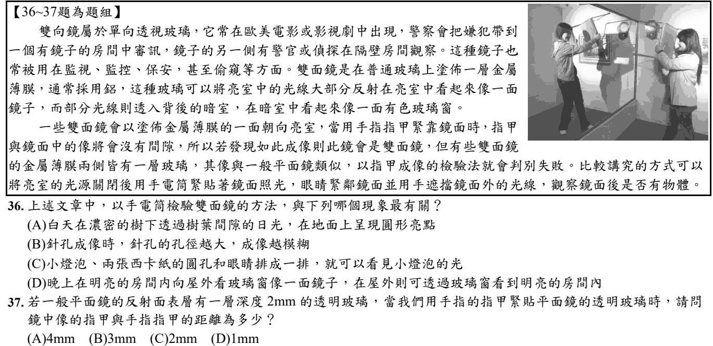
雙面鏡的原理：哪一邊亮，玻璃就對那一邊像鏡子；從暗的一邊可以看穿到亮的一邊。
手電筒法把亮室的燈關掉、只照鏡面——等於讓鏡子後面相對變亮，就看得到後面有沒有東西。
(D) 晚上屋內亮、屋外暗：屋內的人看窗戶像鏡子，屋外的人卻看得到屋內 → 同一個道理。
(A)(B)(C) 都是「光直線前進」的現象，跟這篇文章講的反射與透光無關。
平面鏡：物距 ＝ 像距。但要量到反射面，不是量到玻璃表面。
反射面在玻璃後面 2 mm，指甲貼著玻璃 → 指甲到反射面 2 mm → 像在反射面後面 2 mm。
指甲到像 ＝ 2 ＋ 2 ＝ 4 mm。
文章裡說「指甲與像沒有間隙」的是雙面鏡（金屬膜在表面）；一般鏡子會看到間隙，就是這 4 mm。
第 4 章 ④ 凸面鏡與凹面鏡2 題
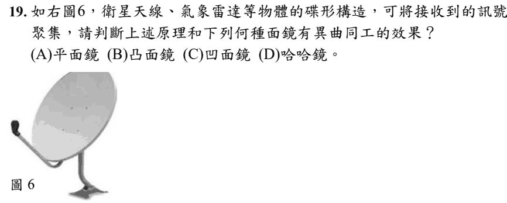
碟形天線、雷達是凹進去的面：平行射來的訊號碰到它，會被反射會聚到焦點，接收器就放在焦點上。
凹面鏡也是同樣的功能（例如太陽能聚光）→ (C)。
(A) 平面鏡不會聚光。(B) 凸面鏡讓光發散。(D) 哈哈鏡是凹凸不平的鏡子，把像扭曲。
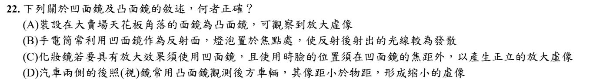
(A) 賣場角落是凸面鏡沒錯，但凸面鏡成縮小的虛像（才看得到大範圍），不是放大 ✗
(B) 燈泡放在凹面鏡焦點，反射後是平行光射出（照得遠），不是發散 ✗
(C) 化妝鏡是凹面鏡沒錯，但臉要在焦距以內，才會成正立放大虛像 ✗
(D) 後照鏡用凸面鏡：成正立縮小虛像，像距小於物距 ✓
第 4 章 ⑤ 光的折射7 題
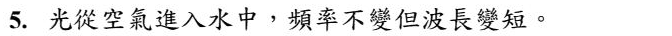
頻率由光源決定，換到別的介質也不會變。
光進入水中，速率變慢；波長 ＝ 速率 ÷ 頻率，頻率不變、速率變小 → 波長變短。
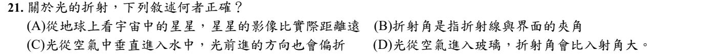
先把明顯錯的刪掉：
(B) 折射角是折射線和法線的夾角，不是和界面 ✗
(C) 垂直射入時方向不會偏折 ✗
(D) 空氣進入玻璃，光變慢、偏向法線 → 折射角比入射角小 ✗
(A) 星光穿過地球的大氣層會折射，所以我們看到的星星位置和它實際的位置不一樣 → 選 (A)。
補充：更精確的說法是，大氣折射讓星星看起來比實際位置高一點。選項寫「距離比較遠」不太精確，但另外三個選項都明顯錯，用刪去法選 (A)。
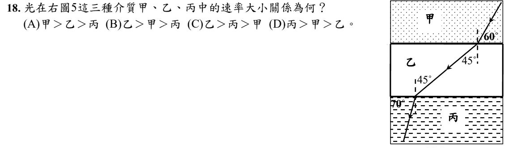
規則：光線和法線的夾角愈大，那個介質裡的光速愈快。
先把每一層換成「和法線的夾角」（圖中的虛線是法線）：
甲：標示的 60° 是和界面的夾角 → 和法線 90 − 60 ＝ 30°
乙：和法線 45°
丙：標示的 70° 是和界面的夾角 → 和法線 20°
45° ＞ 30° ＞ 20° → 光速 乙 ＞ 甲 ＞ 丙。
陷阱：題目給的角度不一定是從法線量的，先看清楚角度標在哪裡。
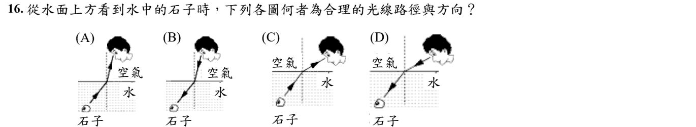
先想清楚光的方向：我們看到石子，是光從石子出發 → 水 → 空氣 → 進入眼睛。(B)(D) 箭頭是從眼睛射向石子，方向反了 ✗。
光從水進入空氣，速率變快，折射線偏離法線（變得更斜）。
(A) 進入空氣後反而變得更直（偏向法線）✗。(C) 進入空氣後變得更斜 ✓。
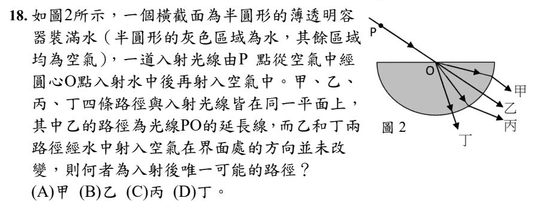
過圓心 O 的法線是一條鉛直線。光從空氣進入水，速率變慢，要偏向法線——也就是比原來的方向（乙，PO 的延長線）更陡、更往下 → 丁。
甲、丙比乙更斜，是偏離法線，方向錯了。
為什麼丁在曲面射出時不轉彎？因為光從圓心出發，沿著半徑走，剛好垂直射到圓弧上，垂直入射就不偏折。
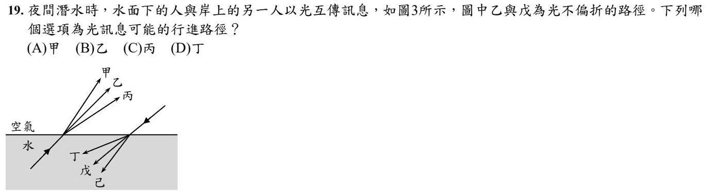
甲、乙、丙是從水裡射到空氣的光，乙是沒有偏折的路線。
水 → 空氣：光變快，偏離法線（變得更斜、更貼近水面）→ 比乙更斜的是 丙。
(A) 甲比乙更直（偏向法線），方向反了。(D) 丁是從空氣射進水裡的光：空氣 → 水應該偏向法線（應該是己），丁卻更斜 ✗。
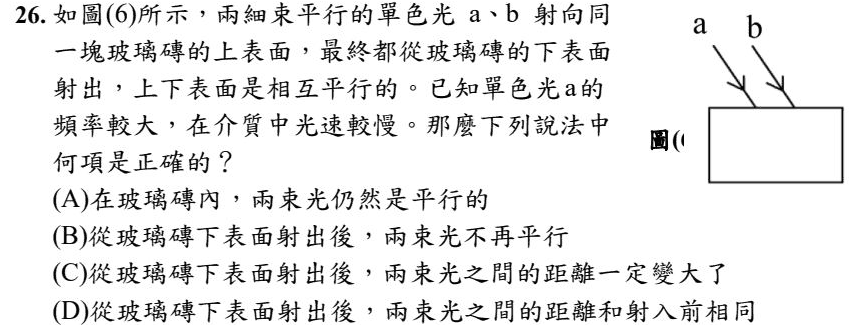
a 光在玻璃中比較慢 → 進玻璃時偏折得比較多（更偏向法線）；b 偏折得少。
(A) 兩束偏折的程度不同，在玻璃裡就不平行了 ✗
(B) 上下表面互相平行，光從下表面射出時會「轉回」原來的方向 → 兩束出來後又平行 ✗
(C) 在玻璃裡，b 比 a 更往右斜，兩束愈走愈開 → 射出後距離變大 ✓
(D) 距離已經被拉開，不會和原來相同 ✗
第 4 章 ⑥ 凸透鏡與凹透鏡2 題
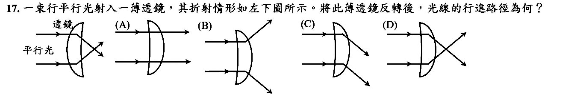
圖中是凸透鏡（中間厚、邊緣薄），平行光穿過後會聚、交叉。
把它翻面，它還是中間厚、邊緣薄 → 還是凸透鏡 → 平行光一樣會聚到焦點再散開 → (D)。
(A) 光完全沒偏折 ✗。(B) 光往外發散，那是凹透鏡 ✗。(C) 兩條光都往下偏，沒有會聚 ✗。
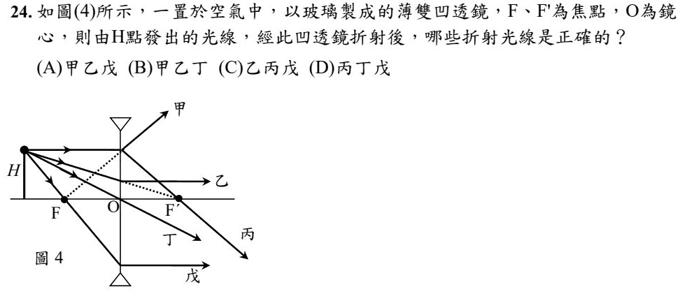
凹透鏡的三條特殊光線：
① 平行主軸射入 → 折射後往外散，延長線好像從同一側的焦點 F 發出 → 甲 ✓（圖中虛線就是從 F 拉過來）
② 朝另一側焦點 F′射去 → 折射後平行主軸 → 乙 ✓
③ 通過鏡心 O → 直直穿過不偏折 → 丁 ✓
丙（平行光折射後通過 F′）和戊（通過 F 後變平行）是凸透鏡的規則，放到凹透鏡就錯了。
第 4 章 ⑦ 透鏡的成像16 題
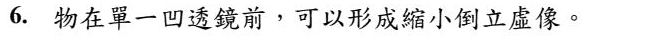
凹透鏡不管物體放在哪裡，都只成正立、縮小、虛像。
而且虛像必正立——「倒立虛像」根本不存在，看到這四個字就可以判錯。
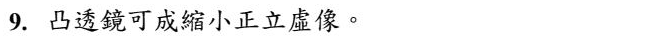
錯。凸透鏡成虛像時一定是放大的（那就是放大鏡）；成縮小的像時一定是倒立實像。
「縮小 ＋ 正立 ＋ 虛像」這個組合，是凹透鏡的專利。
把四種可能排一次就永遠不會錯：
· 凸透鏡，物在焦距外 → 倒立實像（可大可小）
· 凸透鏡，物在焦距內 → 正立放大虛像
· 凹透鏡 → 正立縮小虛像（永遠只有這一種）
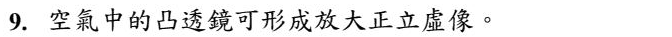
凸透鏡，物體放在焦點以內 → 正立、放大、虛像。這就是放大鏡。
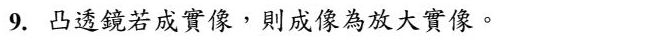
凸透鏡成實像時，大小要看物體放在哪裡：
· 物體在兩倍焦距外 → 倒立縮小實像（照相機）
· 物體剛好在兩倍焦距 → 倒立等大實像
· 物體在焦點和兩倍焦距之間 → 倒立放大實像（投影機）
所以「成實像就一定是放大實像」照課本來看是不對的。
⚠️ 補充：照上面的整理，這句話應該是「否」；但本題官方答案是 「是」，這裡照官方答案計分；如果考試遇到類似題目，請問老師這一題怎麼算。
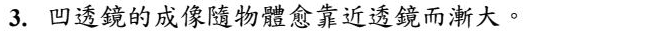
對，但要看清楚它說的是「漸大」，不是「變成放大」。
凹透鏡永遠成正立、縮小的虛像——這一點不會變。改變的是縮小的程度：物體愈靠近透鏡，像就愈接近原本的大小（但永遠不會超過）。
用生活經驗檢查：拿一副近視眼鏡看東西，愈貼近字，字愈接近正常大小；拿遠一點，字就縮得愈小。
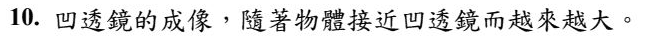
和 113 學年度是非題第 3 題一樣：凹透鏡永遠成正立縮小虛像，但物體愈靠近，像就愈接近原本的大小 → 「越來越大」是對的（只是永遠不會超過物體）。
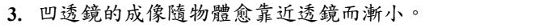
剛好和上一題相反：凹透鏡的像是隨物體靠近而漸大，不是漸小。
是非題常這樣出：把一個字換成反義字。每個形容詞都要對過一次。
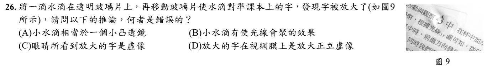
水滴中間厚、邊緣薄 → 小凸透鏡，會把光會聚（A、B 對）。字在焦點以內，所以我們看到的是正立放大的虛像（C 對）。
(D) 錯在「視網膜上」：不管看什麼，眼睛的水晶體在視網膜上成的一定是倒立縮小實像。虛像沒有光真的聚在那裡，不可能成在視網膜上。
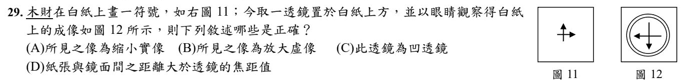
比較圖 11 和圖 12：箭頭原本往上、往右，成像變成往下、往左 → 倒立；而且變大了 → 倒立放大。
倒立的一定是實像；凸透鏡要成倒立放大實像，物體要在焦點和兩倍焦距之間 → 紙到鏡子的距離大於焦距 → (D)。
(A) 是放大不是縮小。(B) 倒立的不會是虛像。(C) 凹透鏡只能成正立縮小的像。
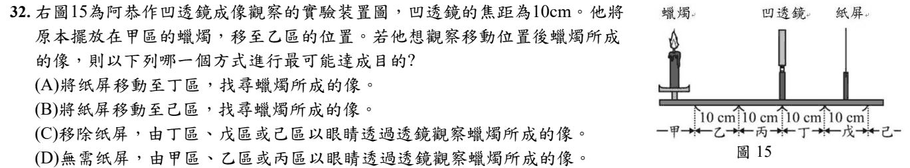
凹透鏡只成正立縮小虛像，像和蠟燭在同一側，紙屏接不到。
要看虛像，就要從另一側（丁、戊、己區）透過透鏡看 → (C)。
(A)(B) 用紙屏找虛像，永遠找不到。(D) 站在蠟燭那一側，眼睛沒有透過透鏡，看不到像。
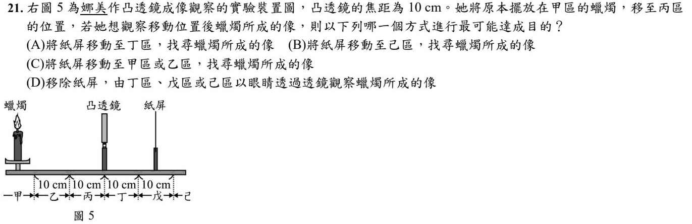
凸透鏡焦距 10 cm，丙區離透鏡不到 10 cm → 蠟燭在焦點以內 → 成正立放大的虛像（放大鏡）。
虛像紙屏接不到，要從另一側透過透鏡看 → (D)。(A)(B)(C) 都是用紙屏找，找不到。
和 112 學年度第 32 題對照：那一題是凹透鏡、這一題是凸透鏡放在焦點內，兩個都是虛像，答法一樣。
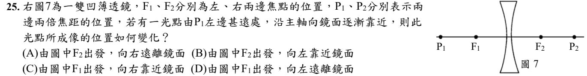
凹透鏡成像的規則：像一定是正立縮小虛像，和物體在同一側，而且一定落在同側焦點和鏡心之間。
物體在很遠的地方 → 像在焦點附近；物體慢慢靠近 → 像也慢慢往鏡心靠近。
⚠️ 補充：照這個規則，光點在左邊，像應該從左邊的 F₁ 出發、向右靠近鏡面，也就是 (C)。本題官方答案是 (A)，這裡照官方答案計分；如果考試遇到類似題目，請問老師這一題怎麼算。
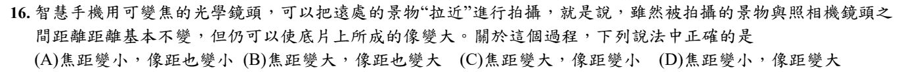
景物很遠時，像幾乎就成在焦點上 → 像距 ≈ 焦距。
要讓像變大：把焦距變長，像距也跟著變大，底片上的像就變大 → (B)。
生活例子：望遠鏡頭（長焦鏡頭）又長又大，就是因為焦距長；手機「拉近」就是在切換成焦距較長的鏡頭。
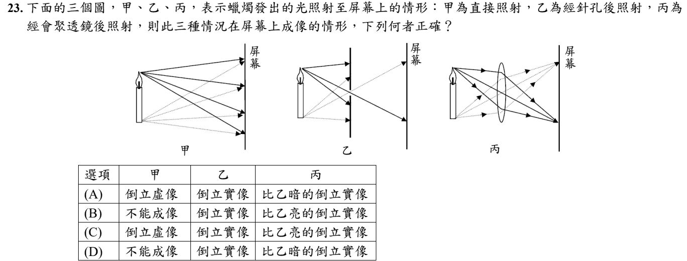
甲：沒有針孔、沒有透鏡，燭焰每一點的光散到整個屏幕，全部疊在一起 → 不能成像（只是被照亮）。
乙：針孔讓每一點只有一小束光通過 → 倒立實像，但光很少，比較暗。
丙：凸透鏡把同一點發出的很多條光會聚到同一點 → 倒立實像，而且比乙亮 → (B)。
(A)(C) 甲並沒有成虛像。(D) 透鏡收集的光比針孔多，所以是更亮。
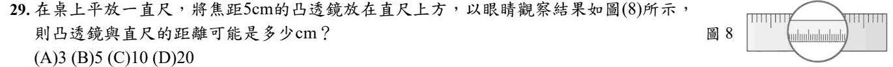
看圖 8：透鏡裡的刻度變大，而且方向沒有顛倒 → 正立放大虛像。
凸透鏡要成正立放大虛像，物體要在焦點以內：距離小於 5 cm → 只有 3 cm。
(B) 剛好在焦點不成像；(C) 10 cm 在兩倍焦距上，成倒立等大實像；(D) 20 cm 成倒立縮小實像。
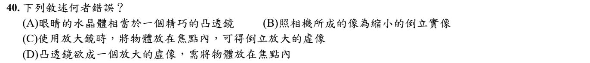
放大鏡：物體放在焦點內，得到正立放大的虛像，不是「倒立」→ (C) 錯。
(A) 水晶體是凸透鏡 ✓。(B) 照相機成縮小倒立實像 ✓。(D) 凸透鏡成放大虛像要放焦點內 ✓。
第 4 章 ⑧ 視力矯正與光的顏色12 題

對。近視是眼球太長，光線太早會聚，成像落在視網膜前面。
要救它，就要先把光發散一點，讓會聚點往後退——這正是凹透鏡在做的事。
遠視相反：成像落在視網膜後面，要提早會聚，所以戴凸透鏡。記法：近視凹、遠視凸。
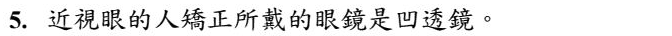
和 113 學年度是非題第 5 題一樣：近視的像落在視網膜前面，要先讓光發散一點 → 凹透鏡。
記法：近視凹、遠視凸。
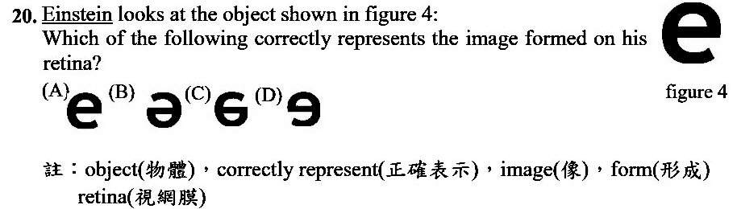
眼睛像一台照相機：水晶體是凸透鏡，在視網膜上成倒立、縮小、實像。
「倒立」是上下、左右都顛倒，等於把 e 轉半圈 → 看起來像 ə → (B)。
(A) 沒有轉。(C)(D) 只翻了一個方向。
那為什麼我們看到的世界是正的？因為大腦會自動把它轉回來。
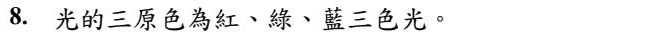
色光的三原色是紅（R）、綠（G）、藍（B），螢幕上的每一個顏色都是用它們依不同強度混出來的。
不要和美術課的「顏料三原色」（洋紅、黃、青）搞混。
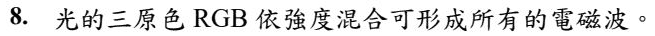
RGB 混合可以得到各種看得見的顏色（色光），但電磁波還包括無線電波、微波、紅外線、紫外線、X 光……這些人眼看不見，不是用紅綠藍混出來的。
「所有的電磁波」說得太大了 → 否。
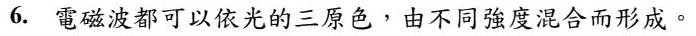
和 113 學年度是非題第 8 題同一個陷阱：三原色只能混出可見光的各種顏色，不是所有電磁波（無線電波、X 光等都不行）。
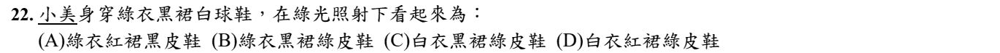
物體的顏色＝它反射回來的色光。在綠光底下：
綠衣：反射綠光 → 綠
黑裙：什麼光都吸收 → 黑
白鞋：什麼色光都反射，照到綠光就反射綠光 → 綠
→ 綠衣、黑裙、綠鞋 (B)。
規則：色光照到和自己同色或白色的地方 → 看起來是那個色光；照到其他顏色 → 被吸收，看起來是黑色。
要讓黑色共 10 cm²：
(A) 紅光：紅、白 → 紅色；藍 8 ＋ 綠 2 ＝ 10 變黑 ✓
(B) 藍光：紅 4 ＋ 綠 2 ＝ 6 變黑
(C) 綠光：藍 8 ＋ 紅 4 ＝ 12 變黑
(D) 白光：各顏色照原樣，沒有黑色
綠色墨鏡只讓綠光通過，其他色光都被擋掉。所以透過它看：
綠色、白色的部分 → 都只剩綠光進眼睛 → 看起來綠；紅、藍的部分 → 沒有光通過 → 看起來黑。
奈及利亞（綠白綠）→ 綠、綠、綠，整面一樣 ✓
法國 → 黑綠黑；義大利 → 綠綠黑；祕魯 → 黑綠黑。
兩件事要一起想：像的大小和色光的混合。
① 像的大小：物體愈靠近凸透鏡（但在焦點外），成的實像愈大。① 藍燈最靠近透鏡 → 像最大；③ 紅燈最遠 → 像最小。
② 三個像疊在一起：最外圈只有藍；中間一圈是藍 ＋ 綠 ＝ 青；最中心三色都有 ＝ 白 → (A)。
色光混合：紅＋綠＝黃、綠＋藍＝青、紅＋藍＝洋紅、紅＋綠＋藍＝白。
白光 ＝ 紅 ＋ 綠 ＋ 藍。三種色光各自遇到哪一片膜：
紅光：碰到紅光反射膜（左下到右上那條）→ 被反射，往上走 → (1)
綠光：兩片膜都讓它通過 → 直直往右 → (2)
藍光：碰到藍光反射膜（左上到右下那條）→ 被反射，往下走 → (3)
(1)(2)(3) ＝ 紅、綠、藍 → (B)。
對照圖 11：那是把三色光「合」起來；圖 12 是同一條路線倒著走，把白光「分」開。
黃色香蕉在白光下反射紅光 ＋ 綠光（紅＋綠＝黃）。
這兩種光往右射進稜鏡：紅光被紅光反射膜反射到上方（不會到眼睛）；綠光直直穿過 → 進入眼睛。
眼睛只收到綠光 → 香蕉看起來是綠色。